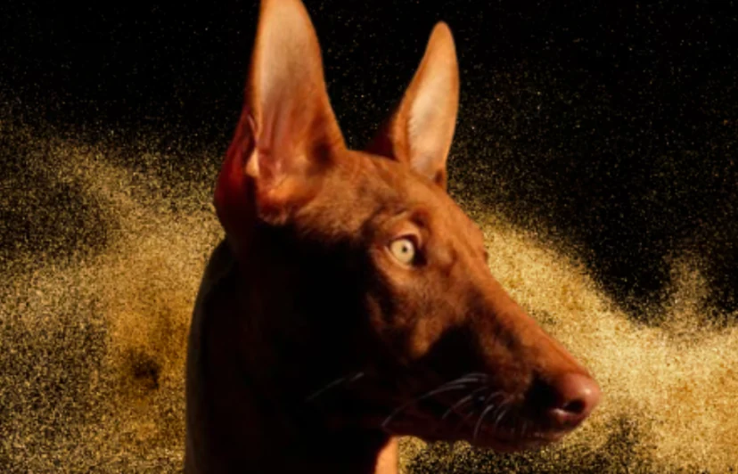
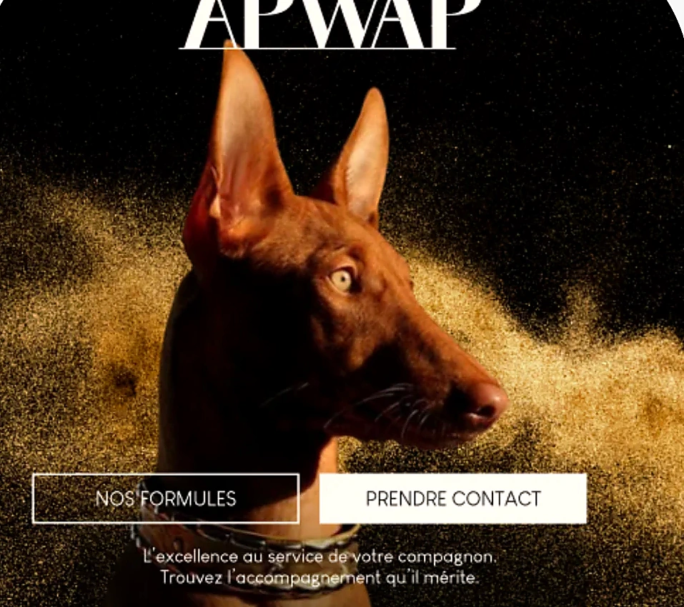
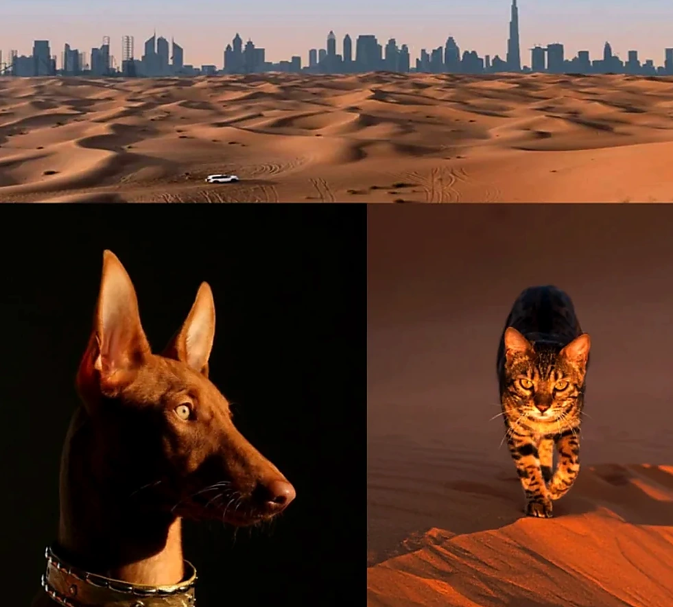
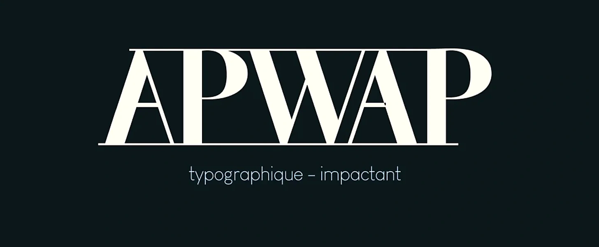
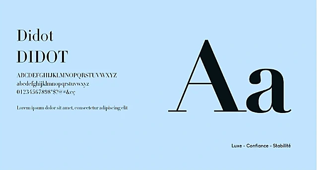
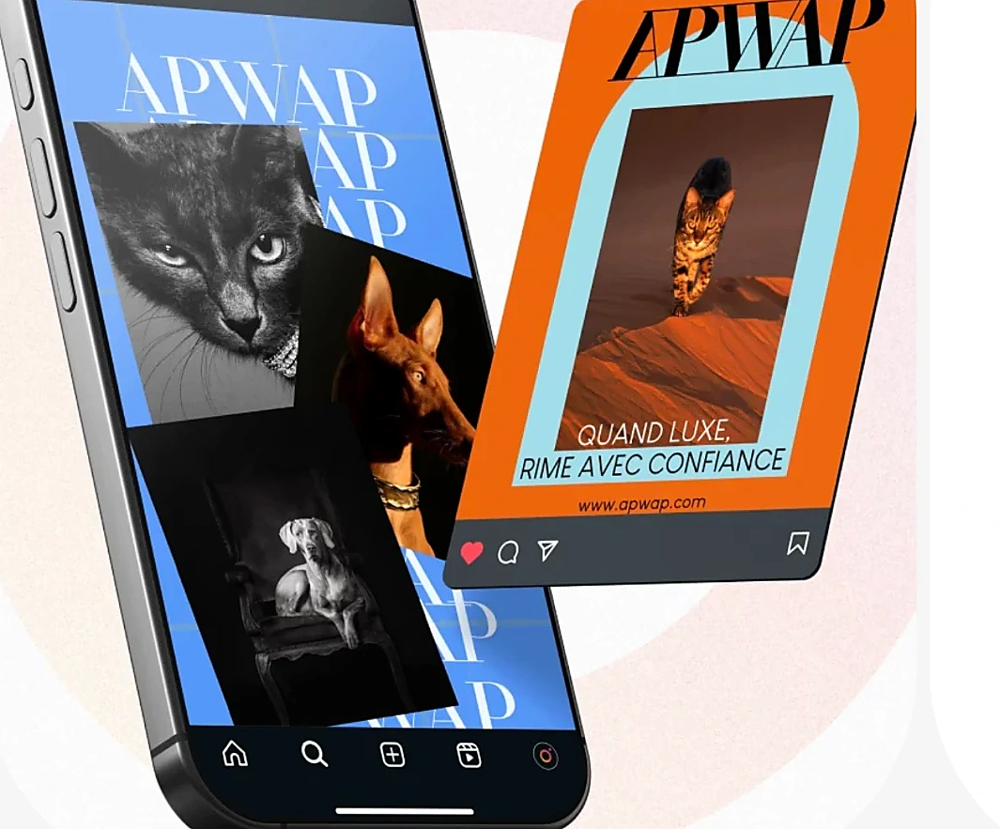

03 / BRANDING · IDENTITÉ VISUELLE
APWAP.
L’élégance au service de nos compagnons.
DESIGN & DIRECTION ARTISTIQUE

LA VISION
UN UNIVERS
PREMIUM.
APWAP associe l'univers animalier à une esthétique élégante. La photographie naturelle, les contrastes marqués et les lumières cuivrées créent une présence visuelle à la fois affirmée et chaleureuse.

CHOIX VISUELS
UNE IMAGE
AUTHENTIQUE.
- Style naturelCapturer l’animal tel qu’il est, sans artifices.
- Lumière chaudeDes teintes dorées et cuivrées pour une ambiance rassurante.
- Fond sombreDes noirs profonds et des contrastes marqués pour une lecture premium.

SYSTÈME VISUEL
LES DÉTAILS
FONT LA DIFFÉRENCE.

LA SIGNATURE TYPOGRAPHIQUE
Didot, pour l'impact.
Un caractère à empattements expressif, utilisé comme élément majeur de l'identité.
Contraste et caractère.
Une palette qui équilibre sobriété, douceur et une touche d'orange énergique.
APPLICATIONS DE MARQUE
UNE IDENTITÉ
QUI PREND VIE.
La direction graphique se décline dans les supports, les visuels éditoriaux et les compositions mobiles.


UNE IDENTITÉ
À PART ENTIÈRE.
De la direction photographique jusqu’aux mises en situation, APWAP explore une expression de marque cohérente, chaleureuse et visuellement forte.